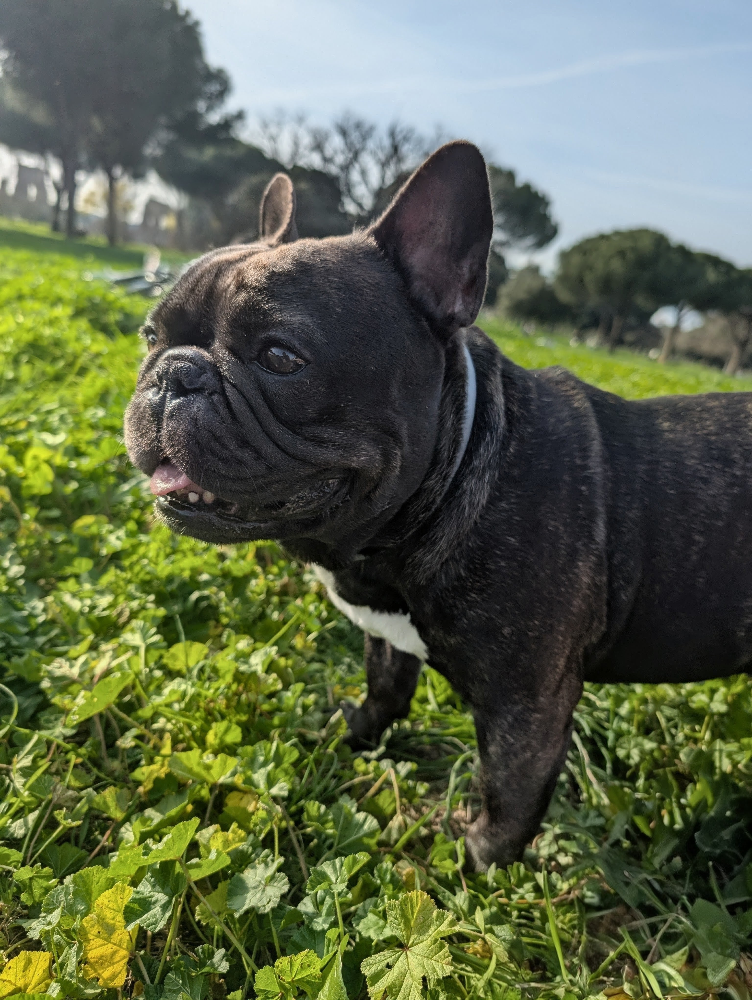
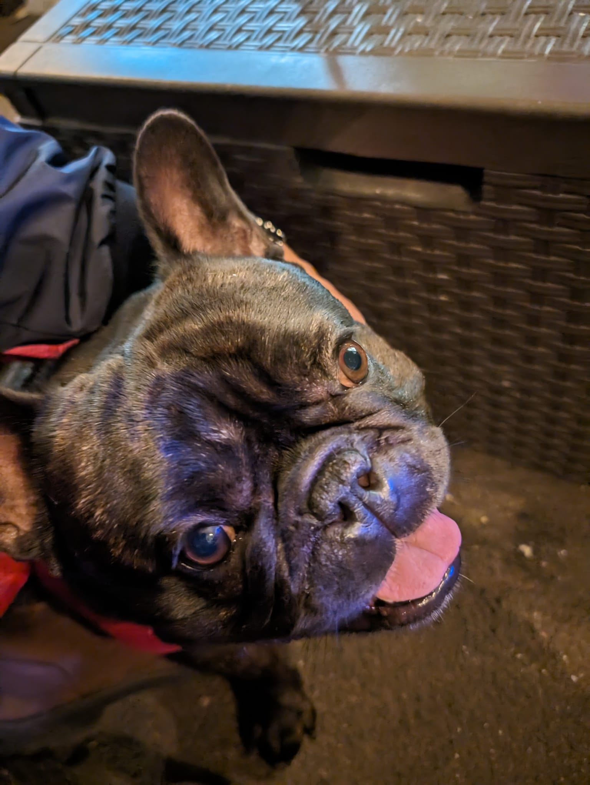

Collare, sezione Salute, la mappa del quartiere e un assistente sempre presente lavorano insieme: leggi i segnali del tuo cane, scopri i posti giusti intorno a te e sai cosa fare.

Tocca le sezioni in basso ed esplora Home, Salute, Luoghi e Alert, e chiedi all’assistente da qualsiasi schermata. È la stessa esperienza dell’app.
L’assistente attraversa tutte e quattro le aree: è presente in ogni schermata e ti parla del punto in cui sei.
Tocca il telefono per aprirlo a schermo intero 👇

Non registra soltanto dati. Li mette in contesto, così ti accorgi prima dei cambiamenti che contano.
Insieme ti danno un quadro più chiaro del tuo cane, mettono i segnali in contesto e ti aiutano ad agire meglio — dentro e fuori casa.
Come sta il tuo Frenchie in un colpo d’occhio: stato generale, parametri e gli appuntamenti o le attività che meritano attenzione.
Tiene insieme abitudini quotidiane e storia sanitaria del tuo cane, così ogni segnale ha più contesto e diventa più facile da capire nel tempo.
La mappa della community: aree cani e parchi, veterinari, altri proprietari di Frenchie vicino a te e le segnalazioni di pericoli del quartiere. Più sicurezza nelle uscite, e qualcuno con cui condividerle.
Ti avvisa quando qualcosa merita più attenzione, sui temi più delicati per la razza: schiena, respiro e pelle.
Non è una sezione a parte: vive in ogni schermata. Sa cosa stai guardando — la Home, una metrica, un alert, un luogo sulla mappa — e ti parla di quello. E non aspetta sempre che sia tu a chiedere: quando i dati lo richiedono, è lui ad avvisarti per primo.
Apri l’assistente da una scheda e parte già sul punto: capisce la schermata da cui arrivi.
Col caldo previsto o un valore fuori soglia, è lui a farsi vivo con un consiglio prima che tu lo chieda.
Risposte mirate sulla razza, basate su fonti affidabili — e sui dati reali del tuo cane.
Vetri, strade dissestate, punti a rischio: le segnalazioni degli altri proprietari, confermate sul campo, ti aiutano a evitare i tratti critici.
Proprietari della stessa razza, aree cani e veterinari a portata di mano. Per organizzare un’uscita o trovare aiuto in fretta.
Le posizioni dei proprietari sono approssimate e visibili solo su consenso. Il contatto avviene in-app, mai con indirizzi esatti.
Raccoglie i segnali che contano davvero: attività, temperatura esterna, respirazione e altri indicatori utili per il benessere del tuo Frenchie.
Li mette in contesto usando la sezione Salute, dove abitudini quotidiane e storia sanitaria restano organizzate in un unico posto.
Trasforma tutto questo in alert e consigli pratici, per aiutarti ad accorgerti prima dei cambiamenti e gestire meglio la quotidianità.
Per ogni area, FrenchiePal raccoglie i segnali utili e li trasforma in qualcosa che puoi davvero usare, giorno dopo giorno.
Il rischio
Salti, scale e movimenti ripetuti accumulano carico invisibile sulla colonna, senza che tu te ne accorga subito.
Come ti aiuta FrenchiePal
Il collare legge l’intensità dell’attività e ti avvisa quando la giornata diventa troppo intensa per lui.
Il rischio
Caldo, umidità e sforzo eccessivo possono trasformare un’uscita in un rapido affanno.
Come ti aiuta FrenchiePal
Unisce meteo e segnali respiratori per avvisarti quando è il momento di rallentare o fare una pausa.
Il rischio
Prurito ignorato e umidità nelle pieghe portano in fretta a rossori e flare cutanei ostinati.
Come ti aiuta FrenchiePal
Monitora i trend di grattamento, così intervieni con pulizia e cure prima che diventi un problema.
Il rischio
Senza una memoria ordinata di visite, terapie e cambiamenti, i segnali importanti rischiano di perdersi nel tempo.
Come ti aiuta FrenchiePal
Tiene insieme abitudini, visite, terapie e cambiamenti: alert e assistente hanno così più contesto.
Nasce dall’aver affrontato davvero due ernie, una gastrite e tante piccole difficoltà quotidiane con un Bulldog Francese.
Lo stiamo costruendo partendo da ciò che chi vive con questa razza conosce bene: caldo, salti, pelle, respiro e segnali facili da sottovalutare.
“I Bulldog Francesi hanno bisogni speciali. E anche chi li ama avrebbe bisogno di strumenti specifici.”
Stiamo costruendo FrenchiePal insieme ai proprietari di Frenchie: il tuo feedback conta davvero. Dicci quale area vorresti risolvere per prima.
Nessuno spam, solo aggiornamenti sul progetto e sulle prossime novità.
Grazie! La tua richiesta è stata registrata.
Raccogliamo come dato personale l’email, quando scegli di lasciarcela per restare aggiornato. L’email viene trattata separatamente dai log di conversazione, salvati in forma sanitizzata.
I dati di utilizzo sono associati a sessioni anonime e usati per migliorare il servizio. Log di utilizzo e conversazione vengono anonimizzati, ridotti o cancellati dopo 12 mesi.
Usiamo partner selezionati per il funzionamento del servizio, inclusi Supabase per database e logging e OpenAI per l’elaborazione dell’Assistente.
Titolare: FrenchiePal
Contatto: info.frenchiepal@gmail.com
FrenchiePal non sostituisce il veterinario né gli altri professionisti di riferimento del tuo cane. Le informazioni hanno finalità informative e di supporto alla gestione quotidiana.
È pensato per aiutarti a osservare meglio, dare contesto ai segnali del tuo cane e gestire con più consapevolezza la quotidianità.
Per diagnosi, terapie, emergenze o situazioni delicate è sempre necessario rivolgersi a un veterinario.